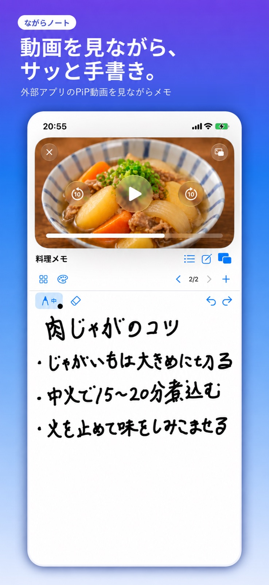
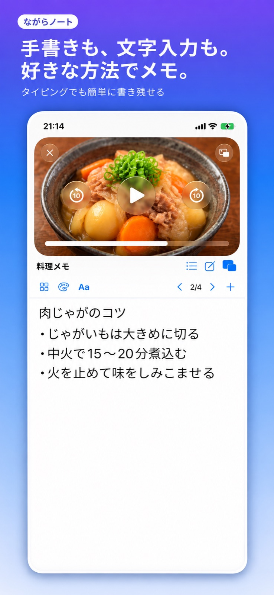
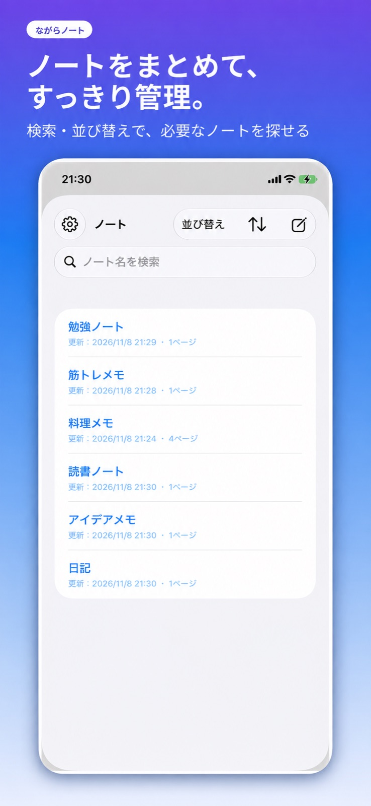
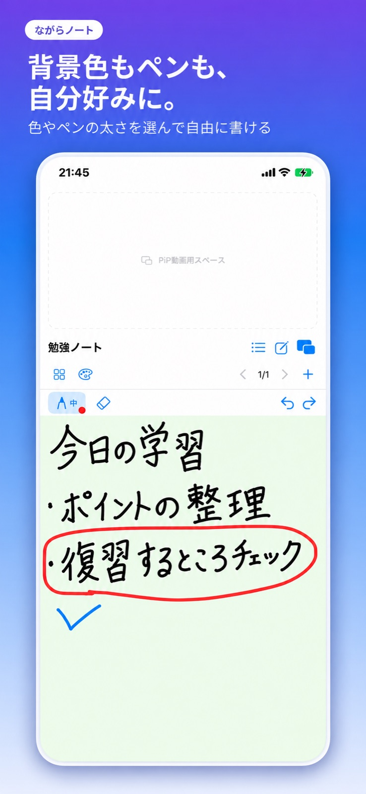
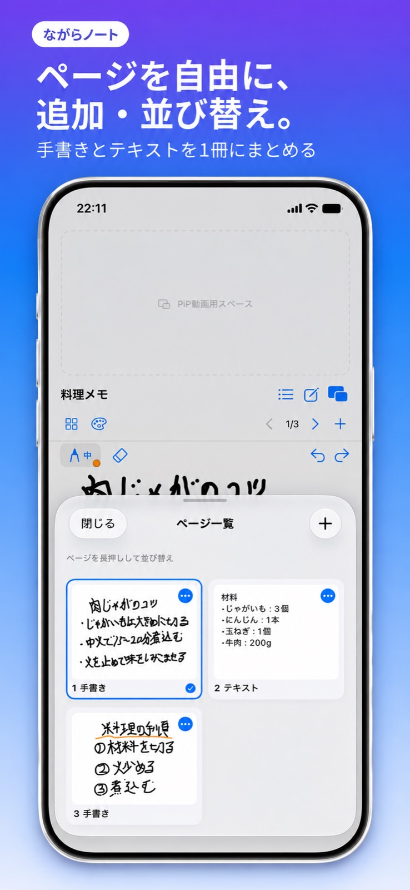

動画とメモを、ひとつの画面に。
外部アプリのPiP動画を表示しながらメモ。料理の手順も、勉強のポイントも、見ながら残せます。
WATCH. NOTE. MAKE IT YOURS.
気になったことを、その瞬間に。
動画のとなりに、あなただけのノートを。
「ながらノート」は、外部アプリのPiP（ピクチャ・イン・ピクチャ）再生を利用し、動画を見ながら手書きやテキストでメモを取れるiPhone向けアプリです。
ユーザー登録不要 · ノートは端末内に保存

ひらめきを、置き去りにしない。料理のコツを。／学びの要点を。／トレーニングの気づきを。
MADE FOR YOUR EVERYDAY
外部アプリのPiP動画を表示しながらメモ。料理の手順も、勉強のポイントも、見ながら残せます。
自由に書く手書きページと、キーボードで入力するテキストページ。用途に合わせて1冊にまとめられます。
ノート名の検索と並び替えに対応。ページの追加・削除・並び替えで、自分の使いやすい順番に。
ペンの色・太さ、テキストの文字サイズを変更。背景色はページ単位でもノート全体でも設定できます。
A CLOSER LOOK
実際の画面で、使い心地をチェック。




HOW TO USE
YouTubeなど、PiPに対応した外部アプリで動画を再生します。
外部アプリ側でPiP再生を開始し、動画を小さなウィンドウで表示します。
動画を見ながら、手書きやテキストで気づきを残しましょう。
ながらノート自体に動画の検索・再生機能はありません。PiPの対応状況は、外部アプリ、コンテンツ、利用プラン、端末などによって異なります。
SIMPLE PLANS
FREE
無料ノート5冊まで
ながらノート PRO
買い切り月額料金なし
価格はアプリ内の購入画面・App Storeでご確認ください。